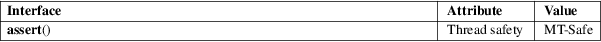

assert − abort the program if assertion is false
Standard C library (libc, −lc)
#include <assert.h>
void assert(scalar expression);
This macro can help programmers find bugs in their programs, or handle exceptional cases via a crash that will produce limited debugging output.
If expression is false (i.e., compares equal to zero), assert() prints an error message to standard error and terminates the program by calling abort(3). The error message includes the name of the file and function containing the assert() call, the source code line number of the call, and the text of the argument; something like:
prog: some_file.c:16: some_func: Assertion `val == 0' failed.
If the macro NDEBUG is defined at the moment <assert.h> was last included, the macro assert() generates no code, and hence does nothing at all. It is not recommended to define NDEBUG if using assert() to detect error conditions since the software may behave non-deterministically.
No value is returned.
For an explanation of the terms used in this section, see attributes(7).

C11, POSIX.1-2008.
C89, C99, POSIX.1-2001.
In C89, expression is required to be of type int and undefined behavior results if it is not, but in C99 it may have any scalar type.
assert() is implemented as a macro; if the expression tested has side-effects, program behavior will be different depending on whether NDEBUG is defined. This may create Heisenbugs which go away when debugging is turned on.
abort(3), assert_perror(3), exit(3)